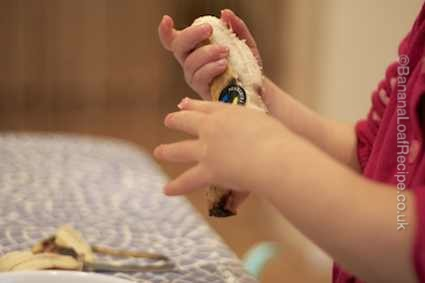

12 Great Tips for Successful Baking with Kids

So, you've printed your free downloadable banana loaf recipe for kids and you're planning on a baking session today. Before you start, here are our tips to make your life easier. There's nothing worse than your fantastic baking plan ending up with a shouting parent and two cross kids, a half-mixed cake, butter on the floor, flour in their hair (and yours) and sad faces all round. You want a delicious cake and happy faces and a feeling of pride and achievement - we believe these tips will help you achieve that.
1. Time it Right
Pick a time when you’re not in a hurry and when you don't need the results to be perfect.
2. Have a Plan
Familiarise yourself with the recipe - read it through. Know what needs doing and that you have all the ingredients and equipment in the house. Look at the pictures on our main banana loaf recipe page as a visual guide to understanding what each step involves.
3. Make Space
Prepare the area. Clear a big space (move their drawings and your laptop!) and, if you are worried about the floor, put down some plastic.
4. Get Yourself Ready
Be prepared - if you have time. For example, get out ingredients in advance - you want to be supervising the children not hunting around the back of the cupboard for the next ingredient while they empty the flour onto the flour.

5. Hygiene
Make sure the children wash their hands, roll up their sleeves and wear aprons or bibs.
6. Sightlines
Make sure the children can see what’s happening - work on a surface they can kneel up to - or bring the whole process down to the floor!
7. Safety
Explain safety and hygiene in basic terms - eg we don’t eat raw eggs and the oven is hot so don’t go near it. Don’t let them near sharp knives.

8. Bite-sized chunks
The younger your child is, the shorter their attention span. If you know your child has a short attention span, pick a part you think they’ll enjoy and engage them at that stage after you’ve done some of the prep work yourself.
9. Reality Check
Trust your child - but accept that they will do silly things. Kids as young as two can crack an egg into a bowl by themselves and rub fat into flour. But they may also tip the ingredients over their heads! Cooking is about experimenting - with the feel, the texture and the “what happens if I do this” aspect of mixing things together. When things go wrong or they wreck it, take a deep breath and try to think positively about what they have learned.

10. Limit mistakes
If you’re letting your younger child do the weighing out, it helps to use a separate bowl for weighing and then tip each weighed ingredient into the main mixing bowl. Similarly, crack one egg at a time into a small bowl, then tip each one into the mixing bowl once you’ve checked for shell. That way, you limit the effect of mistakes.
11. This IS fun!
Enjoy yourself! You’re having fun with the kids and they are learning!
12. Don't Despair
And if it didn’t work this time? Don’t give up on cooking with the kids. Just go back to the most simple cooking with kids thing you can think of - like jam tarts with ready made pastry - until they’re ready to move on.